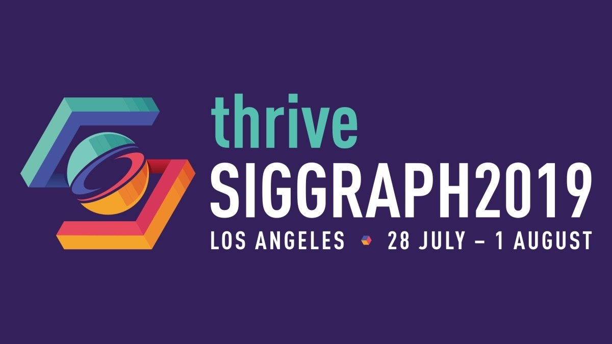
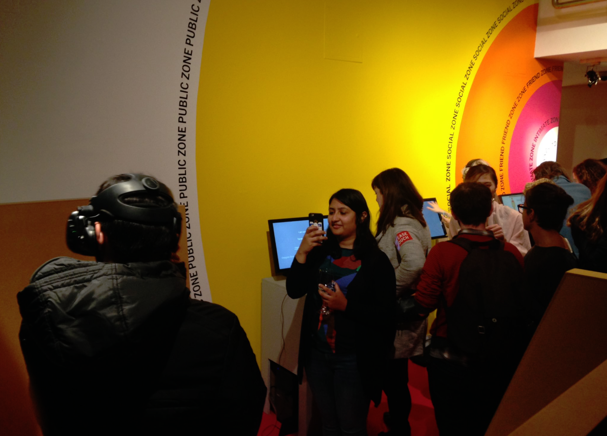
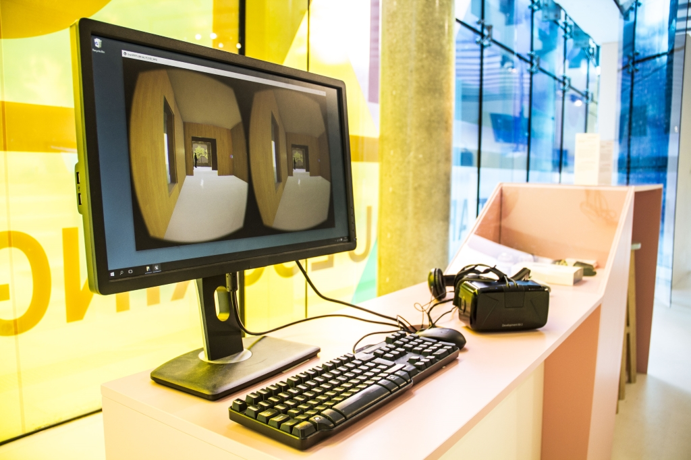
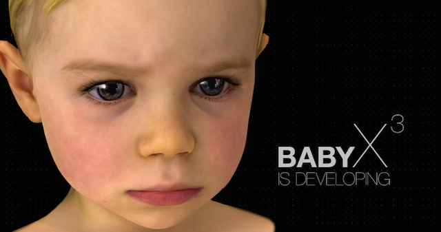
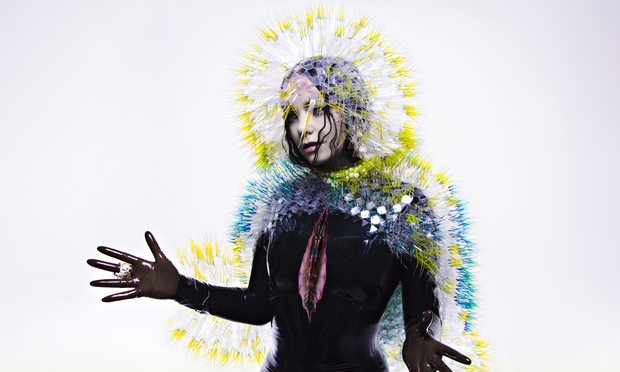

NEWS
We received the best paper award at the Symposium on Applied Perception 2019 for the paper: "Is Photorealism Important for Perception of Expressive Virtual Humans in Virtual Reality?" Yay!

We will hold a course at this year's SIGGRAPH! Come and join us!

We are currently exhibiting at the Science Gallery Dublin! Visit the Intimacy exhibition and make sure to try out our Vive experiment.
This GCD demo "Siren" features a real-time facial and body capture retargeted on a realistic virtual human. The result is striking.
Our paper on the importance of render style and the personality of virtual characters in VR has been accepted to this year's IEEE VR!
Presented our research paper "Don't Stand so Close to me!" at the ACM Symposium on Applied Perception 2017 in Cottbus, Germany. Attendees of the conference gave some amazing talks and kept a comfortable distance towards me.

Experiment as an exhibit - a successful integration of research into the public realm. Our virtual reality experiment featured at the "Seeing" exhibition at the Science Gallery Dublin. Authors: Katja Zibrek, Elena Kokkinara and Rachel McDonnell.

Neural networks being used for machine learning... All this with a cute baby virtual model!

Virtual reality is becoming more accessible (mainly thanks to Oculus Rift) and some artists, Björk included, are already experimenting with it to add a more immersive experience to their creative work. Full article:
Björk's super video